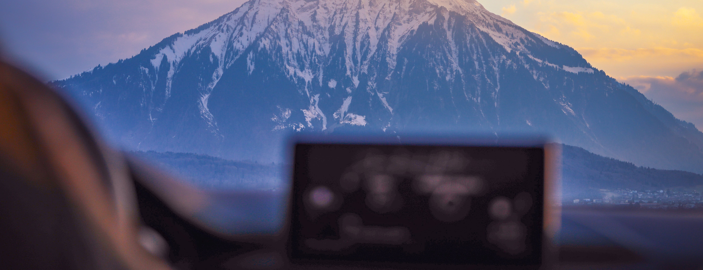
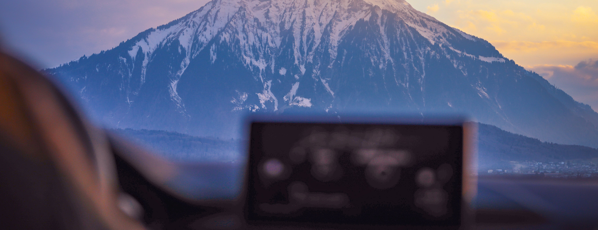

穿越中...
穿越中...
 千亿级像素全景图，鼠标旋转缩放
瑞士-因特拉肯
千亿级像素全景图，鼠标旋转缩放
瑞士-因特拉肯
 



Welcome to Interlaken，Switzerland
因特拉肯（lnterlargen）距伯尔尼南部36英里(1英里=1.6093公里）被认为是瑞士最适合观光的地方。
因特拉肯兴起于中世纪，源自拉丁文interlacus,意为在两个湖泊之间。海拔1870英尺，位于图恩湖（LakeThun）及布里恩茨湖（LakeBrienz）之间的低地地区。面积4.4万平方公里，人口近6000。有着特殊地理位置，它周围有许多伯尔尼阿尔卑斯地区的名胜，是伯尔尼地区的门户。附近有下塞恩、维尔德斯维尔、马腾三小镇。静谧秀美的小镇与温婉美丽的少女峰浑然一体，美得令人窒息。

因特拉肯是瑞士最古老及最受欢迎的旅游胜地之一，旅游业是其目前最重要的收入来源。
因特拉肯修道院于1133年建于阿勒河左岸，通过收取过桥费维持收入。因特拉肯市因该修道院而得名。13世纪，修道院的影响力扩大至周围地区及阿勒河谷，成为这一地区最大的宗教活动场所。然而，1350年，一连串危机和冲突导致了修道院的衰败。宗教改革之后，修道院的部分建筑作为地区的行政大楼使用，其他部分则成为当地医院。1746年，修道院的西翼遭到损坏，当时的统治者在其基础上建造了新城堡，并从那时开始作为因特拉肯地区的行政中心沿用至今。1800年开始，因特拉肯就因其美丽的自然风光、便捷的交通设施和酒店服务成为世界闻名的旅游胜地。
瑞士居民主要信仰天主教和基督教，其中天主教徒约占信教人口总数的44.1%，基督教徒占36.6%。另，伊斯兰教徒约占4.5%， 其他3.1%，无宗教者占11.7%。
高耸的阿尔卑斯山，以神秘感著称的湖泊，清冽的水和清新的空气，构成了这片美丽的土地。瑞士拥有很悠久的中立国历史传统，自从1815年以后从未卷入过战争；同时许多国际性组织的总部都设在瑞士，如，红十字国际委员会、世界贸易组织以及联合国在欧洲的两个办事处之一。但瑞士并不是欧盟成员国。瑞士也是全球最富裕、经济最发达和生活水准最高的国家之一，按照人均国民生产总值，是世界最富裕的国家之一。有世界公园的美誉。

瑞士文化受到其地理位置和多语言性的影响，在文学、艺术、建筑、音乐、宗教及习俗等各个方面表现出多样性。瑞士山区的文化与平原的不同，不同的语言地区的文化差异显著，主要罗马天主教和新教地区之间也存在文化差别。
瑞士在宗教改革运动中曾是著名的新教“加尔文教”的主要传播中心。其理论创立者加尔文也曾在瑞士待过。